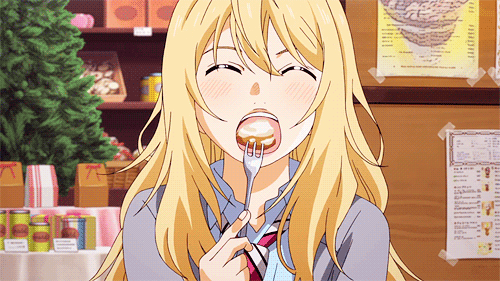

Miyarimi
.btn-42,
.btn-42 *,
.btn-42 :after,
.btn-42 :before,
.btn-42:after,
.btn-42:before {
border: 0 solid;
box-sizing: border-box;
}
.btn-42 {
-webkit-tap-highlight-color: transparent;
-webkit-appearance: button;
background-color: #000;
background-image: none;
color: #fff;
cursor: pointer;
font-family: ui-sans-serif, system-ui, -apple-system, BlinkMacSystemFont,
Segoe UI, Roboto, Helvetica Neue, Arial, Noto Sans, sans-serif,
Apple Color Emoji, Segoe UI Emoji, Segoe UI Symbol, Noto Color Emoji;
font-size: 100%;
line-height: 1.5;
margin: 0;
-webkit-mask-image: -webkit-radial-gradient(#000, #fff);
padding: 0;
}
.btn-42:disabled {
cursor: default;
}
.btn-42:-moz-focusring {
outline: auto;
}
.btn-42 svg {
display: block;
vertical-align: middle;
}
.btn-42 [hidden] {
display: none;
}
.btn-42 {
border-radius: 999px;
box-sizing: border-box;
display: block;
font-weight: 900;
-webkit-mask-image: none;
padding: 1rem 3rem;
position: relative;
text-transform: uppercase;
}
.btn-42 span {
mix-blend-mode: difference;
}
.btn-42:before {
--thickness: 4px;
border: var(--thickness) solid #fff;
border-radius: 999px;
content: "";
inset: calc(var(--thickness) * -1);
opacity: 0;
pointer-events: none;
position: absolute;
transform: scale(1.3);
transition: transform 0.2s, opacity 0.2s;
}
.btn-42:hover:before {
opacity: 1;
transform: scale(1);
}
.btn-42:hover {
background-color: transparent;
}
下面有个折叠框（打开看看！
miyarimi
巧克力薄荷（chocomint！！
whp
badeu
mrekk
还有各位好友
保持对osu的热爱
会玩全模式
成为top（ctl472坏掉前的幻想
你的双手是为了osu服务的，而不是你的一生
